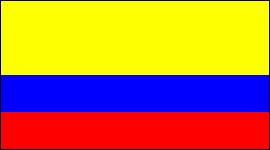
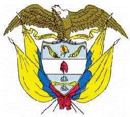

Colombia
|  |  |
Información general
Nombre oficial: República de Colombia
Área: 1141748 km²
Costas: 3 208 km
Colombia está situada al Noroeste de América del Sur y es el cuarto país del continente por su tamaño. Son parte del territorio colombiano las islas caribeñas de San Andrés, Providencia y Santa Catalina, igualmente las de Gorgona, Gorgonilla y Malpelo en el Pacífico.
División política: 32 Departamentos
Departamento Capital
- Amazonas Leticia
- Antioquía Medellín
- Atlántico Barranquilla
- Arauca Arauca
- Bolívar Cartagena
- Boyacá Tunja
- Caldas Manizales
- Caquetá Florencia
- Casanare Yopal
- Cauca Popayán
- Cesar Valledupar
- Córdoba Montería
- Cundinamarca Santafé de Bogotá
- Chocó Quibdó
- La Guajira Riohacha
- Guainía Puerto Inírida
- Guaviare San José del Guaviare
- Huila Neiva
- Magdalena Santa Marta
- Meta Villavicencio
- Nariño Pasto
- Norte de Santander Cúcuta
- Quindío Armenia
- Putumayo Mocoa
- Risaralda Pereira
- Santander Bucaramanga
- Sucre Sincelejo
- Tolima Ibagué
- Valle del Cauca Cali
- San Andrés y Providencia San Andrés
- Vaupés Mitú
- Vichada Puerto Carreño
Unidad monetaria: Peso
1 Peso = 100 centavos
Idiomas: Español (oficial); (no oficiales) hay distintas comunidades de origen extranjero; se hablan alrededor de noventa lenguas indígenas: chibcha, guajiro y otras
Fiesta nacional: 20 de julio, Independencia
Gentilicio: Colombiano
Hora oficial: GMT -5 horas (normal/verano)
Miembro de: ONU, OEA, ALADI, Pacto Andino
Curiosidades
La Sierra Nevada de Santa Marta es la cadena costera más alta del mundo. Su pendiente norte es comparable con la cara sur del Himalaya.
Santafé de Bogotá está a 2 630 metros sobre el nivel del mar.
El territorio colombiano está atravesado de Norte a Sur por la gran cordillera de los Andes, que se divide en tres cadenas: Occidental, Central y Oriental.
Información adicional en Internet.
Perfil Ecónomico
Perfil Demográfico
Población: 46.045.109 hab.
Densidad de población: 39,7 hab/km²
Perfil Cultural
Alfabetismo: 92 %
Religión:
- Católicos: 95,4%
- Otros: 1,1%
Algunas figuras notables:
- Francisco J. de Caldas (1770-1816). Naturalista y patriota
- León de Greiff (1895-1976). Escritor y poeta
- Jorge Isaacs (1837-1895). Poeta y novelista
- José Eustasio Rivera (1889-1928). Poeta y novelista
- Guillermo Uribe (1880-1972). Compositor
- José Asunción Silva (1865-1896). Poeta y escritor
- Germán Arciniegas (1900). Profesor, escritor y periodista
- Gabriel García Márquez (1928). Escritor y novelista. Premio Nobel de Literatura 1982.
- Fernando Botero (1932). Pintor
- Edgar Negret (1920). Escultor
- Alvaro Mutis. (1923). Poeta y narrador. Premio Príncipe de Asturias 1997.
- Manuel Elkin Patarroyo (1947). Científico.
Lugares declarados patrimonio mundial por la UNESCO
- Cartagena (Puerto, fortaleza y monumentos).
- Parque Arqueológico de San Agustín.
- Santa Cruz de Mompox.
- Parque Nacional Natural Los Katíos.
- Parque Arqueológico de Tierradentro.
Sistema de Gobierno
Constitución vigente: 6 de julio de 1991
Sistema ejecutivo: Presidente (no reelegible de por vida), Vicepresidente y los ministros determinados por la ley. El Presidente y el Vicepresidente son elegidos para un período de cuatro años por la mitad más uno de los votos emitidos en votación popular directa
Sistema legislativo: Congreso Bicameral, formado por el Senado (ciento dos miembros elegidos por circunscripción nacional para un término de cuatro años y un número adicional de dos senadores elegidos en circunscripción nacional por comunidades indígenas) y la Cámara de Representantes (161 miembros elegidos por cuatro años, dos representantes por cada circunscripción nacional y una más por cada 250 000 habitantes o fracción mayor de 25 000)
Sistema judicial: Corte Suprema de Justicia, Corte Constitucional, Consejo de Estado, Tribunales y Juzgados y Corte Electoral. Los magistrados son nombrados por la respectiva corporación de listas enviadas por el Consejo Superior de la Judicatura
Gobierno subdivisional: Los departamentos tienen Gobernadores y legisladores propios elegidos por sufragio. Se subdividen en municipios, con un alcalde electo cada dos años por votación directa
Aproximación histórica
Situada en los Andes Septentrionales, con costas al Mar Caribe y al Océano Pacífico, se encuentra Colombia. Limita con Venezuela y Brasil por el Este, con Ecuador y Perú por el Sur y con Panamá por el Oeste.
Al llegar los españoles, a principios del siglo XVI, varios pueblos indígenas poblaban el territorio. Algunos como los chibchas se destacaron por su organización social. En general todos los grupos indígenas que habitaban el territorio colombiano dejaron trabajos en cerámica y sobresalieron de modo singular en la orfebrería utilizando el oro y el cobre, en objetos de riqueza inusitada y simetría perfecta. Luchas de los conquistadores con los indígenas retrasaron la organización definitiva del Virreinato de Nueva Granada hasta 1740. La batalla de Boyacá, en 1819, decide la independencia de la Nueva Granada. La campaña libertadora continental emprendida por Simón Bolívar, primer presidente de la Gran Colombia, primera unión de Nueva Granada, Venezuela y Ecuador, determina durante una década, los sucesos de la región y en 1830, se cierra el primer capítulo de la historia de Colombia, al retomar su autonomía una vez deshecha la unión bolivariana.
En su superficie se distinguen prácticamente dos Colombias, los llanos orientales, donde señorea la llanura, alternada con la selva y donde la población es mucho menor y la región andina.
Estas características determinan variedad de climas, de acuerdo con la altitud.
En Colombia es notoria la producción de gas, carbón, oro, plata y petróleo, con un incremento industrial en los últimos años. Su capital Santafé de Bogotá, con más de 6 millones de habitantes, es una de las ciudades más importantes de América.
«-- ir al comienzo
«-- regresar